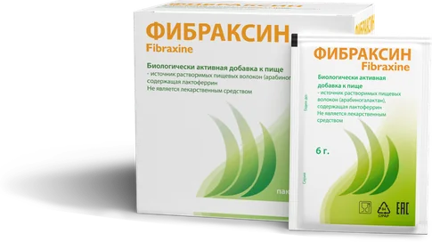

Эндокринология и нутрициология · 2026
Статьи и исследования
Терапия и превентивная медицина · 2026
«Направленное питание кишечной микробиоты как терапевтическая стратегия: место арабиногалактана и лактоферрина»
Колопроктология и гастроэнтерология · 2020
«Комбинированная терапия рифаксимином-α и комплексом арабиногалактана с лактоферрином в профилактике рецидивов симптоматической неосложнённой дивертикулярной болезни (СНДБ)»
Гастроэнтерология и хирургия · 2019
«Влияние профилактической комбинированной терапии (рифаксимин альфа + пребиотик арабиногалактан с лактоферрином) на функцию ЖКТ у пациентов с симптоматическим неосложнённым дивертикулёзом»
Статьи блога «Фибраксин»
Все статьиВидео
Инфографики
Клинические рекомендации
Сколько клетчатки вы получаете?
Укажите, сколько порций из каждой группы продуктов вы съедаете в среднем за неделю — передвигайте ползунки. Результат пересчитывается сразу: сколько пищевых волокон (ПВ) вы получаете из питания в неделю и в день и какой это процент от нормы (30 г/сутки)
Порций в неделю
- = 0,00 г0 порций
- = 0,00 г0 порций
- = 0,00 г0 порций
- = 0,00 г0 порций
- = 0,00 г0 порций
- = 0,00 г0 порций
- = 0,00 г0 порций
- = 0,00 г0 порций
0,00г волокон в день
из 30 г
из 30 г
Укажите количество порций хотя бы по одной группе.
Итого за неделю0,00 г
От нормы0,00 %
Норма в день30 г

Чем Фибраксин дополняет рацион
Больше, чем просто клетчатка
- Арабиногалактан — полностью растворимое и ферментируемое пищевое волокно, которого очень мало в обычной пище.
- Фибраксин — двойная поддержка для организма за счёт синергичного действия двух его компонентов.
1 саше в день — 5,5 г арабиногалактана. В расчёт и на шкалу не входит — калькулятор считает только питание.
Где купить